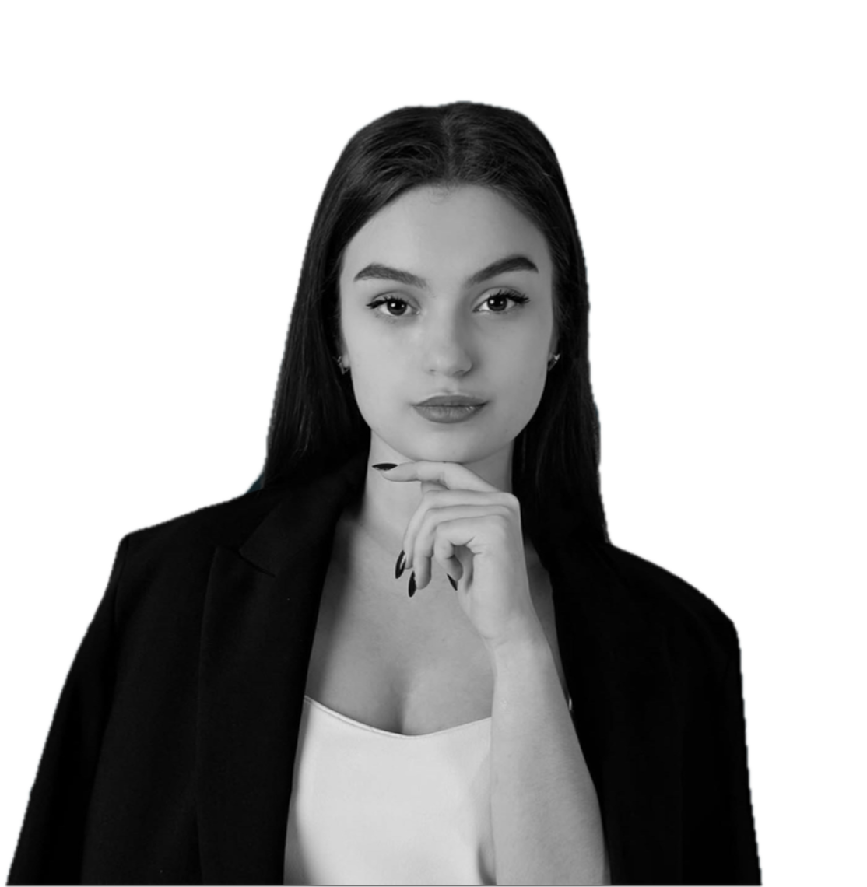
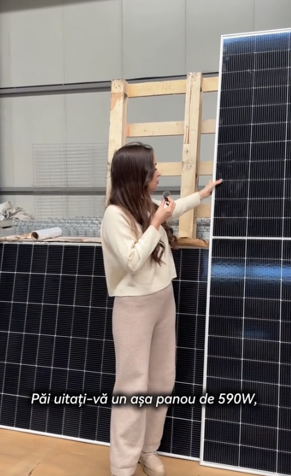
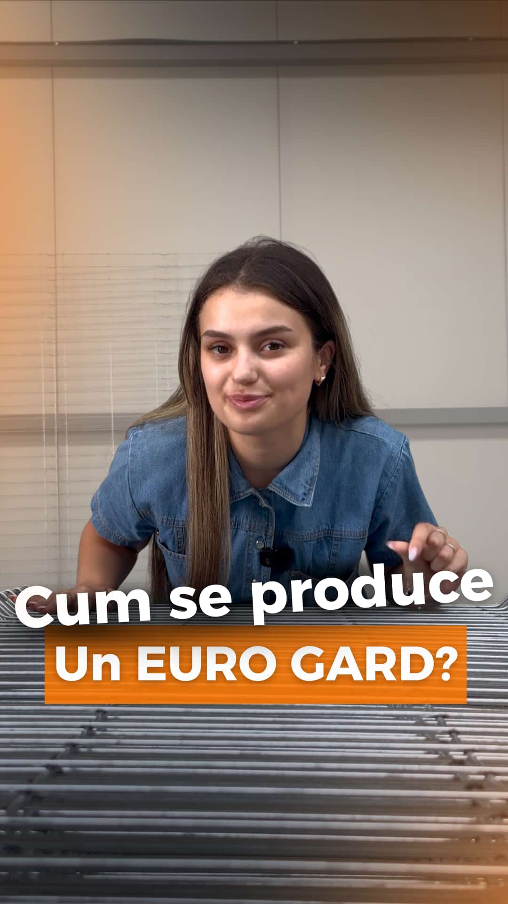

Same GRWM Diary scrapbook, three levels of teal. Pink stays as her second color for highlights and tape. Click the level she likes.
SMM ziua, content creator restul timpului. Știu ce se uită oamenii pe TikTok pentru că îl fac și eu.
Scrie-mi →

Horay ⚡
+60 comenzi!SMM ziua, content creator restul timpului. Știu ce se uită oamenii pe TikTok pentru că îl fac și eu.
Scrie-mi →SMM ziua, content creator restul timpului. Știu ce se uită oamenii pe TikTok pentru că îl fac și eu.
Scrie-mi →